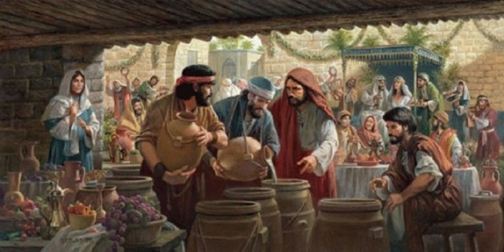
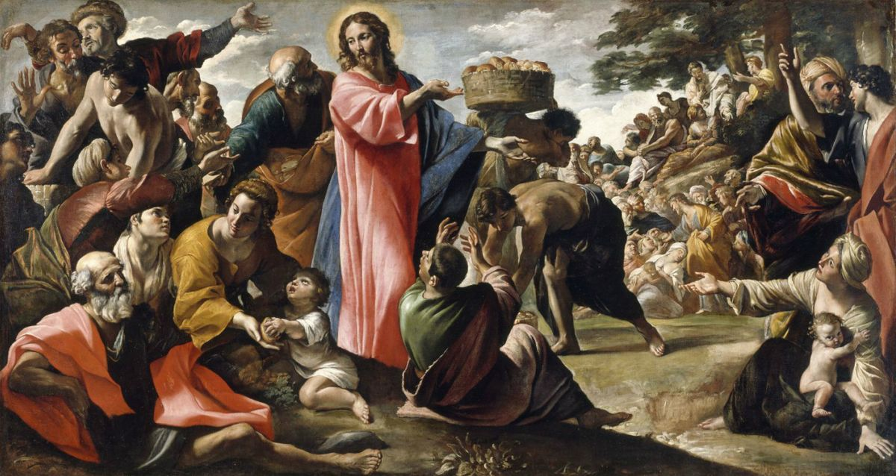

 2. 1 Al tercer dia se celebraron unas bodas en Cana de Galilea, y estaba alli la madre de Jesus. 2 Tambien fueron invitados a las bodas Jesus y sus discipulos. 3 Y falto vino. Entonces la madre de Jesus le dijo:
- No tienen vino.
4 Jesus le dijo:
- ¿Que tiene que ver esto con nosotros, mujer? Aun no ha llegado mi hora.
5 Su madre dijo a los que servian:
- Haced todo lo que el os diga.
6 Habia alli seis tinajas de piedra para agua, dispuestas para el rito de purificacion de los judios; en cada una de ellas cabian dos o tres cantaros. 7 Jesus les dijo:
- Llenad de agua estas tinajas.
Y las llenaron hasta arriba. 8 Entonces les dijo:
- Sacad ahora un poco y presentadlo al encargado del banquete.
Y se lo presentaron. 9 Cuando el encargado del banquete probo el agua hecha vino, sin saber de dónde era (aunque si lo sabian los sirvientes que habian sacado el agua), llamo al esposo 10 y le dijo:
- Todo hombre sirve primero el buen vino, y cuando han bebido mucho, el inferior; sin embargo, tu has reservado el buen vino hasta ahora.
11 Este principio de señales hizo Jesus en Cana de Galilea, y manifesto su gloria; y sus discipulos creyeron en el.
12 Despues de esto descendieron a Capernaum el, su madre, sus hermanos y sus discipulos; y se quedaron alli no muchos dias.
 13 Oyendolo Jesus, se aparto de alli en una barca a un lugar desierto y apartado; y cuando la gente lo oyo, le siguio a pie desde las ciudades.
14 Y saliendo Jesus, vio una gran multitud, y tuvo compasion de ellos, y sano a los que de ellos estaban enfermos.
15 Cuando anochecia, se acercaron a el sus discipulos, diciendo: El lugar es desierto, y la hora ya pasada; despide a la multitud, para que vayan por las aldeas y compren de comer.
16 Jesus les dijo: No tienen necesidad de irse; dadles vosotros de comer.
17 Y ellos dijeron: No tenemos aqui sino cinco panes y dos peces.
18 El les dijo: Traedmelos aca.
19 Entonces mando a la gente recostarse sobre la hierba; y tomando los cinco panes y los dos peces, y levantando los ojos al cielo, bendijo, y partio y dio los panes a los discipulos, y los discipulos a la multitud.
20 Y comieron todos, y se saciaron; y recogieron lo que sobro de los pedazos, doce cestas llenas.
21 Y los que comieron fueron como cinco mil hombres, sin contar las mujeres y los niños.
3. Caminar sobre el agua (Mateo 14: 22-27).
22 En seguida Jesus hizo a sus discipulos entrar en la barca e ir delante de el a la otra ribera, entre tanto que el despedia a la multitud.
23 Despedida la multitud, subio al monte a orar aparte; y cuando llego la noche, estaba alli solo.
24 Y ya la barca estaba en medio del mar, azotada por las olas; porque el viento era contrario.
25 Mas a la cuarta vigilia de la noche, Jesus vino a ellos andando sobre el mar.
26 Y los discipulos, viendole andar sobre el mar, se turbaron, diciendo: ¡Un fantasma! Y dieron voces de miedo.
27 Pero en seguida Jesus les hablo, diciendo: ¡Tened animo; yo soy, no temais!